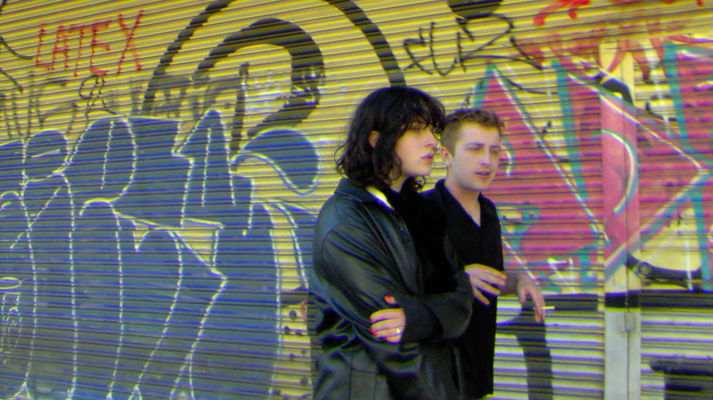
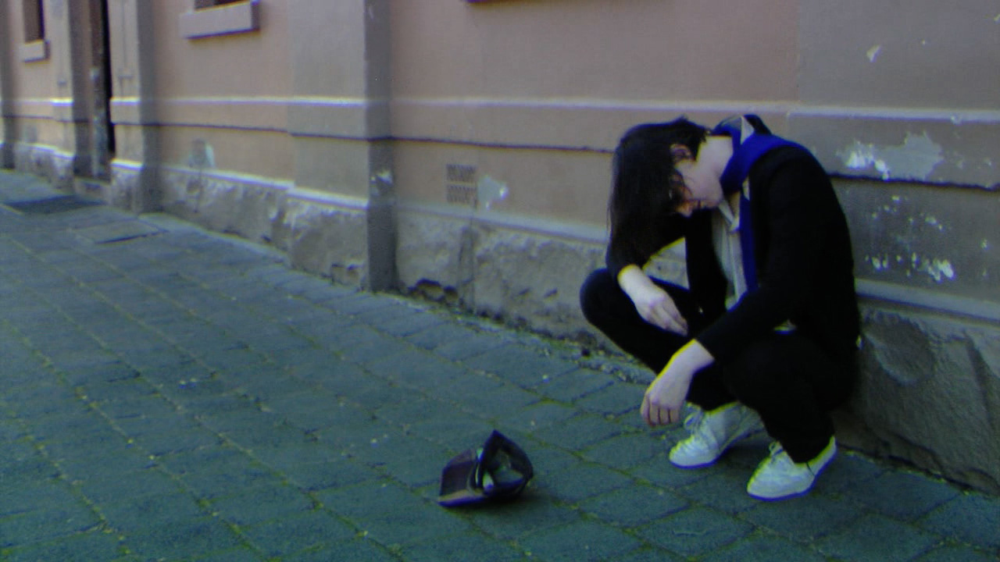
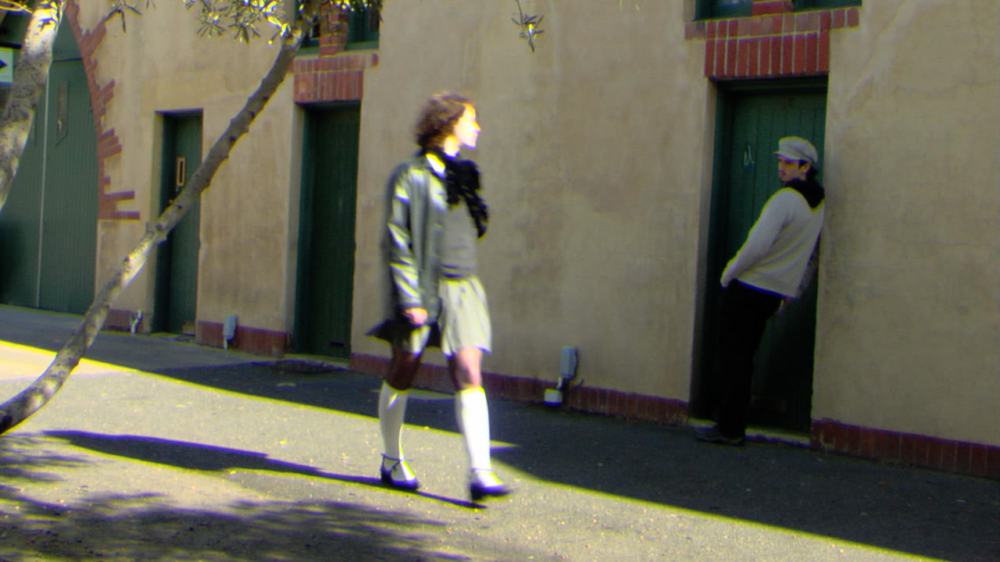
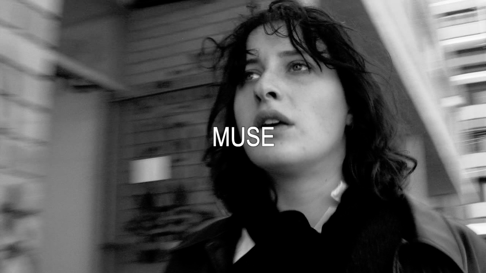
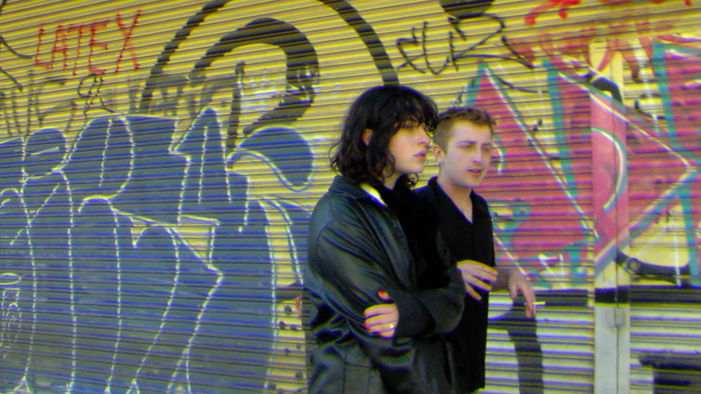
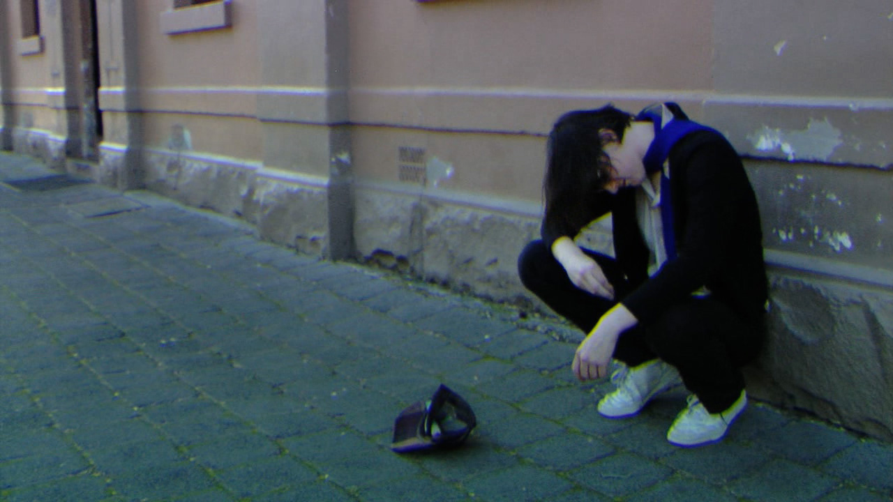
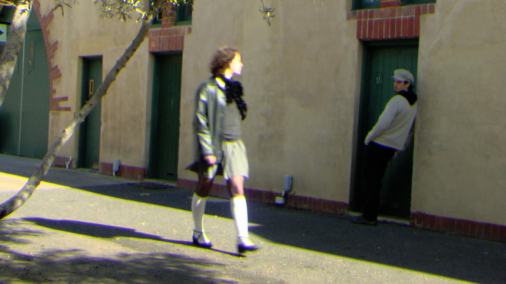
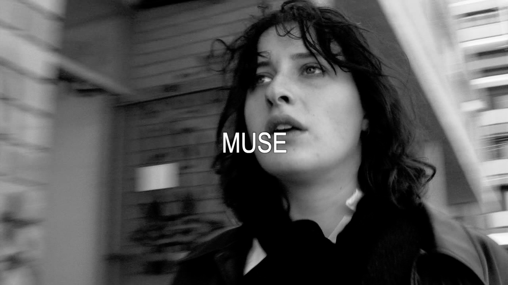

A depressed girl tries to go for a walk in Brunswick…. Thinking she is in a French new-wave film, when in fact her reality is simply a slacker.
Exhibited at The Alderman for UN Projects

 






